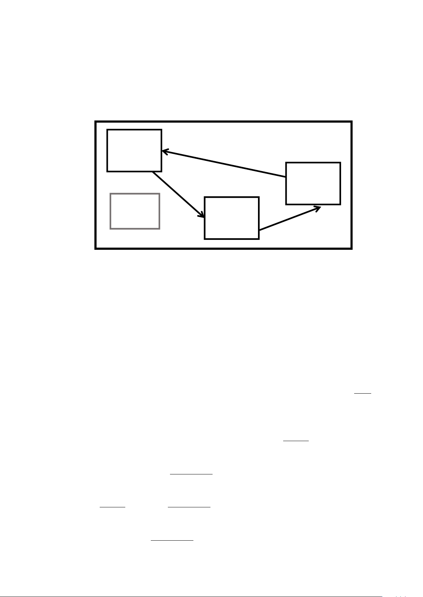

20.(13 分)小穹玩家在基岩版制作密室逃脱地图。可使用 Java 版或基岩版的命令格式作答。
地图内有三间相互分隔的房间，利用各个房间内的道具解开谜题，使用道具后可在三间
房间之间自由传送。每一间房间均封闭，地图会生成一根钓鱼竿用于传送，挥动钓鱼竿（抛
出浮漂/fishing_hook 实体）触发传送。 传送目的地为房间中心，房间大小不定，全体玩家按
下图箭头顺序依次完成传送。命令方块全部摆放于下图中房间 1 命令方块放置地点。
若在房间 1 挥动钓鱼竿，将传送到房间 2；但从房间 2 无法直接传送回房间 1，必须先传
送到房间 3，再从房间 3 传送到房间 1。为搭建这套传送系统，预先执行了计分板创建指令：
/scoreboard objectives add room dummy room
在名为 room 的计分板下，创建分数项 move。
玩家传送系统的各个命令方块内容如下（※为省略填写的坐标内容）：
RCB: execute if entity @e[type=fishing_hook] run scoreboard players add move room 1
CCB1: execute if score move room matches 3 run scoreboard players set move room 0
CCB2: execute if entity @e[type=fishing_hook] if score move room matches 0 run tp @a ※
CCB3: execute if entity @e[type=fishing_hook] if score move room matches 1 run tp @a
Ⅰ
CCB4: execute if entity @e[type=fishing_hook] if score move room matches 2 run tp @a 10 5 25
CCB5: kill @e[type=fishing_hook]
(1) 挥动钓鱼竿后，当 move 分数变为 1 时，则玩家会被传送至 。(选填“房间 1”、
“房间 2”或“房间 3”)
(2) CCB3 的Ⅰ中应填入的内容为 。
(3) 在玩家传送系统的所有命令中，将命令方块条件更改为有条件，系统可正常运行命令
的序号为 ，其原因为 。
(4) 挥动钓鱼竿触发传送后，聊天栏会广播“已将全体玩家传送至（坐标）”的执行结果。
消除执行结果的命令为 。